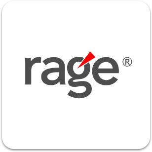
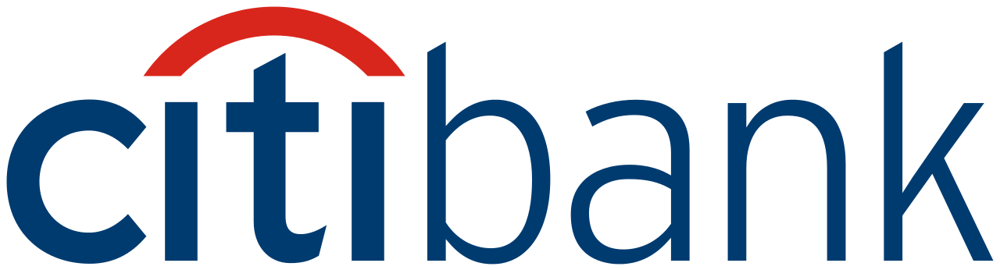
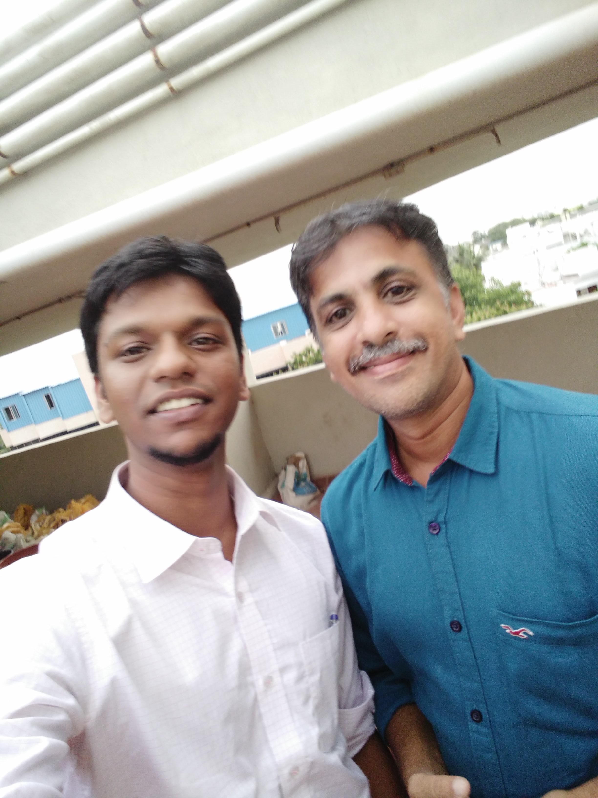
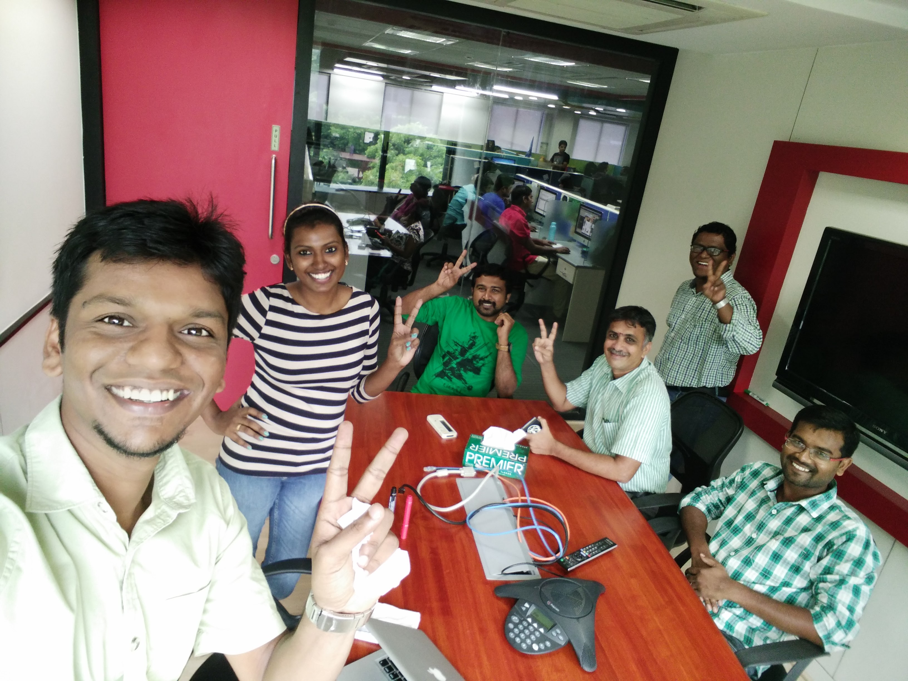
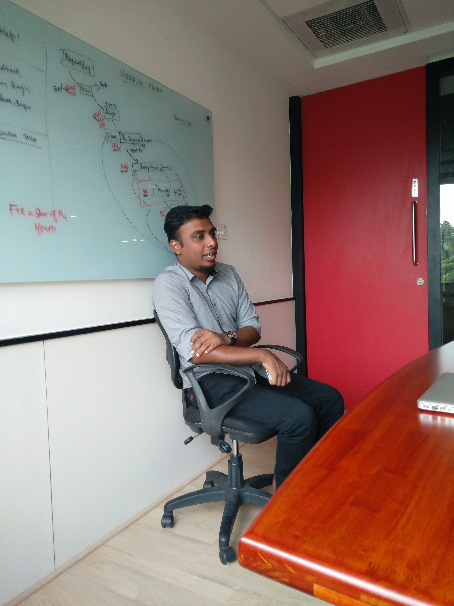
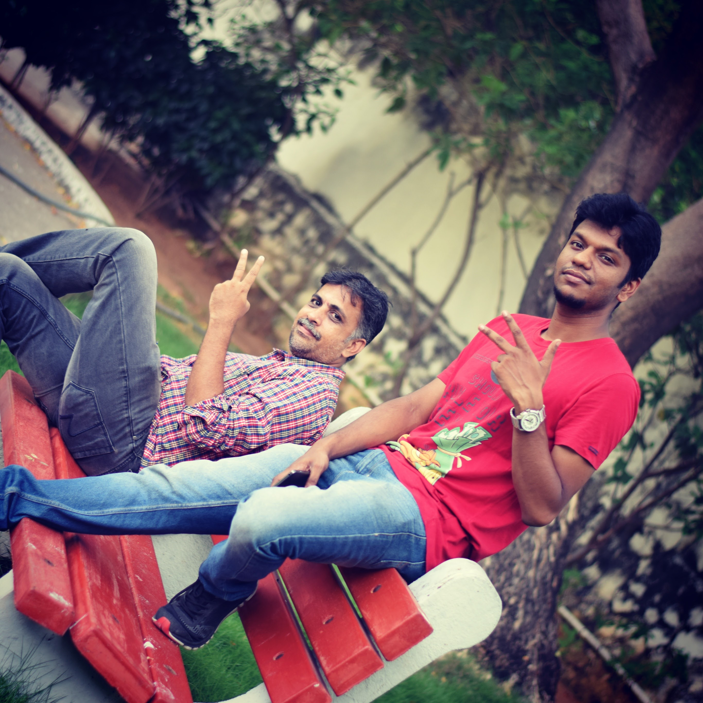
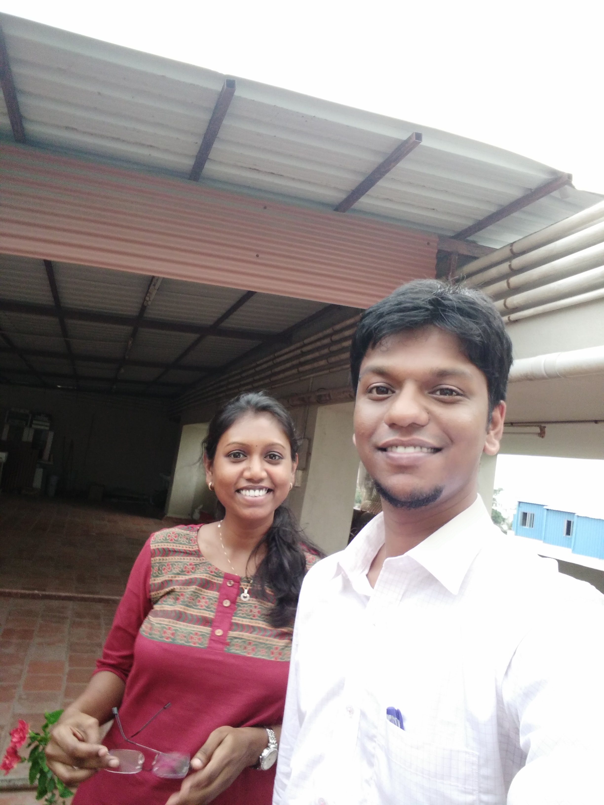

My first UX role. I joined Krishana's DDH team at Rage Communications in 2015 — an independent design team focused on usability testing and interaction design for client products, mostly in retail banking.
I came in from a year of technical support, where most tickets were people drowning in complex software. Rage was where I learned to study that drowning systematically — running interviews, mapping the pain, then designing the screen that fixed it. The bulk of my work was on Citibank's Indian mobile banking app: usability testing the existing experience, building personas across demographics, and reworking the sign-on, account, credit-card, and merchant flows.
Most artifacts are linked below. Reach out for full case-study walkthroughs.
Junior UX Designer — apprentice on a small senior team, learning craft by doing.
Designing for Banking across Demography user journeys has taught me to solve for complex flow and user day to day task.
Most of the work was Citibank India's mobile banking app, broken into the flows that needed UX attention. The exercise was always the same: usability-test what exists, find where users get stuck, redesign that piece, validate. One e-commerce project (Wedding&MarryGold) closed out the year. Click any project for the longer story.

StoryCitibank's Indian mobile banking app was losing users at sign-on and confusing them at the account summary. Friction at the front door of a banking app is the most expensive kind.
Friction at the front door of a banking app is the most expensive kind — the user is right there, intending to use the app, and the UI gets in the way. Usability-testing those exact moments is where the design recommendations earn their cost.
Sat in on usability sessions with Indian banking customers under senior supervision. Identified the moments where the UI assumed too much (terminology, unfamiliar inputs, hidden state). Wireframed each step around what users actually did, not what the spec said they would.
You can't redesign a screen well without watching someone use the broken version. Every change that worked traced back to a session; every one that didn't, skipped that step.
Fill in: a moment from a usability session — a small UI assumption that broke for a real user.Online credit-card applications are where banks lose qualified applicants in the form. Citibank wanted a UX-best-practice pass before the next development cycle.
UX audits often end up as long lists of issues that nobody acts on. The interesting half of an audit is the prioritisation — which findings actually move the needle, and which dev cost is worth paying for which.
Built a checklist of best-practice patterns (progress indication, smart defaults, conditional fields, low-friction input types). Audited every step, scored it, then prioritised changes by expected drop-off impact vs. dev cost.
An audit without prioritisation is research, not design. The forcing function of "which of these would you do first" is what turns findings into decisions.
Fill in: which recommendation turned out to be the highest-impact one, or one the team initially pushed back on.Merchant onboarding for Citibank had grown into a long, branchy form that asked for everything up front. Merchants were giving up partway through.
Long forms aren't long because they have to be. They're long because every team that owns a field is afraid to defer it. The UX work is in deciding what's actually required to continue — and giving the user a sense of distance left.
Broke the form into the smallest meaningful steps. Deferred any field not strictly required to continue. Added a clear progress indicator so merchants knew the end was in sight.
Progress indication isn't a decoration; it's a feature. People will tolerate a long form if they can see it ending.
Fill in: a moment of pushback on which fields were "required", or a usability observation about progress.Updating card information in the app meant retyping a 16-digit number on a phone keyboard. Most people didn't bother.
The biggest UX wins are sometimes choosing the right input method, not redesigning the screen. Asking users to retype a 16-digit number on a phone keyboard is the design problem. Scan is the design solution.
Designed scan as the default and manual as the fallback (most users never see manual). The verify-and-edit step lets users correct what OCR got wrong without restarting.
Design for the path of least resistance, then handle errors gracefully on that path. A scan flow is only as good as its recovery from a misread.
Fill in: was this shipped, and if so, did the adoption confirm scan-as-default?An e-commerce site for the Indian wedding market — a category where shoppers research for weeks and convert in minutes. The existing site treated everyone like a casual browser.
E-commerce in the wedding category isn't one user mode. The same person spends weeks researching, then converts in minutes. A single surface has to serve both modes without making either feel second-class.
Designed for two distinct modes: long research sessions (deep filters, save-for-later, comparison) and conversion sprints (clear price, low-friction checkout). The homepage had to serve both, with neither shouting over the other.
Sometimes one surface needs to flex between user modes. Designing two parallel paths is often cleaner than trying to predict which mode a visitor is in.
Fill in: a moment from the e-commerce switch — what felt different from banking work.Read more here.




